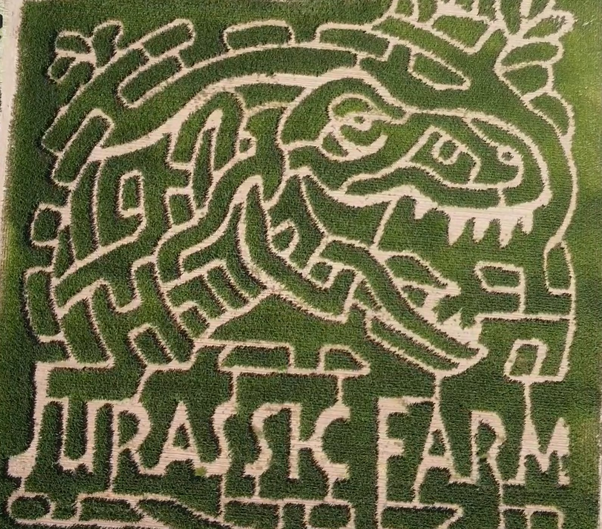
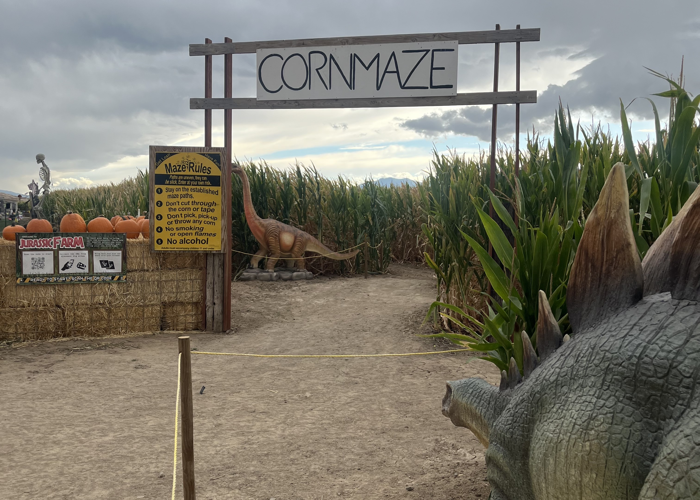
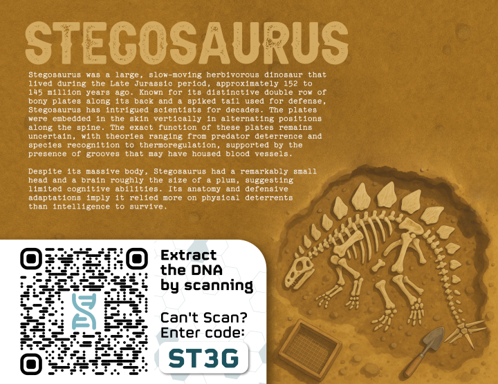

Jurassic Farm
I partnered with a developer to create the maze game Jurassic Farm for Andelin Family Farm in Sparks, Nevada. This game keeps visitors entertained as they walk through and turns a corn maze into a true attraction that gets people coming back again and again.
Strategy & Scope
I had created a few games for previous years' corn mazes of Andelin Family Farm. They were typically more educationally focused, with information tied to the theme of the corn maze design. For 2025 I wanted to step up the quality of the game itself and turn it into an integral part of the corn maze. This could be used in marketing to generate excitement about the maze, be an additional activity for visitors (leading to longer visits and higher spend), and increase word-of-mouth advertising and return visits after the experience.
Designing a Good Game
The two main focuses were creating a game that is easy to understand and easy to share. I determined that building on the simple checkpoint system would be the best course of action. I took inspiration from Pokemon TCG and other collection-type games: Find all of the checkpoints, collect all the dinosurs, share those dinos with your friends. Very easy feedback loop.
Much of the designing process was deciding what to cut out. My first prototype had more complex game mechanics. After finding a fossil dig site checkpoint, players would collect the DNA from the dig site and decide where on the genome to place it. Placement affected which dinosaur the user would receive at the end of the game. Though perhaps more fun for some, it added nothing that the player could do, only being an extra step in collection. Interactivity for interactivity's sake is not a good experience.

Early digital prototype screens.
Designing a Good Experience
There are many things more than a game that were needed to create a good experience for visitors. One of the reasons these checkpoint games started was to connect to the overall theme of the corn maze. So it wouldn't do to have a game that is isolated from the physical experience of the maze.
Aerial view of the corn maze design.
I wanted to create a journey for a visitor that matched their physical movement. As they experience the maze, the game guides them through the different areas. The entrance area is the 'park' with living dinosaurs and photo opportunities. They venture into the maze and find the 'dig sites', where they learn about the dinosaur fossils. On their phone is the 'lab' where they collect the DNA and bring back a dino.
Entrance area with dinosaur statues and game rules explanation
Maze Checkpoint with scan code
Video showing the process of creating a dinosaur
Results
One of the blind spots of previous years' games was that it was hard to tell how engaged users were. Creating a digital game allowed for tracking metrics and user behavior, which revealed some very interesting data and insights. The game was played about 4,800 times over 5 weeks, which given the average group size in the corn maze means there were anywhere from 10,000-12,000 players. 32% of those players completed the full game and created a dinosaur. An interesting insight was that on average players created 2.6 dinosaurs, which indicates a group or reaplaying the game.
It's impossible to know how this compared to last year, however it is a datapoint that can be compared with future games. Anecdotally we received a lot of positive feedback from visitors who enjoyed the game as part of their corn maze experience.